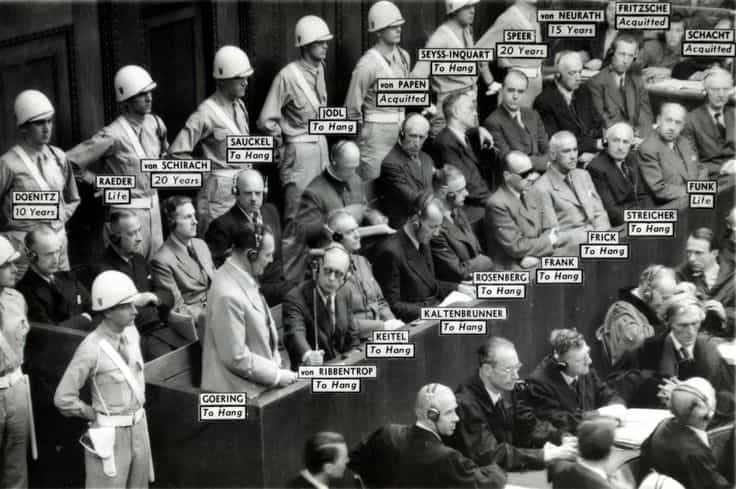

Quintus can be found at qcurtius.com. He is the author of the books On Duties, Thirty Seven, Sallust: The Conspiracy Of Catiline And The War Of Jugurtha, and other books. His work has been reviewed at Taki's Magazine. He can be followed on Twitter


We live in an age of power without responsibility, an age where ambition and hubris are too often to run roughshod over institutional controls and the dictates of common decency. We are too often made to feel helpless in the face of power exercised so far beyond the reach of accountability that many of us have simply given up, and abandoned hope at calling to account those who abuse the trust of the people they were tasked with serving. Does Nuremberg offer us any lessons for our own time? If so, what are they? Is there any hope in the modern era of holding criminal leaders to account for crimes committed in their names? It was with these thoughts in mind that I recently finished Joseph E. Persico’s excellently researched account of the Nuremberg Trials in Germany after the end of the Second World War. The book is entitled Nuremberg: Infamy On Trial.
Even to this day, the trials remain controversial. Persico acknowledges this openly in his introduction:
Was it [the trial] victors’ vengeance or the authentic pursuit of justice? Indeed can a just court be created to try acts which have not been defined as crimes until after the fact? The charge of ex post facto law was to haunt the IMT [International Military Tribunal] from its first day to its last. How valid is the jurisdiction of a court that permits a British prosecutor to try a German national before a Soviet judge for crimes committed in Poland? If aggression was on trial at Nuremberg, then what were Soviet judges doing on the bench? Their nation had invaded Finland and conspired with Germany to divide up Poland. And, granted that Nazi atrocities dwarfed the misdeeds of other belligerents, had not war crimes been committed on all sides? Why were only those on the losing side tried?
There are, of course, no easy answers to these questions. It is a credit to Persico’s intellectual honesty that he is willing to acknowledge that, to a great extent, the trials were a form of victors’ justice; but, he is quick to remind us, that does not mean the trials were a meaningless exercise in revenge. They provided a model for future generations on what an international trial should look like, a model that has been followed in trying participants in conflicts around the world since the 1950s.
Whatever one may think of the trials–and I urge readers not to reach their own judgments until reading the book–they were first-rate drama. What is so fascinating about Persico’s book is that he focuses mainly on the human drama behind the legal proceedings. To be blunt, a good deal of the trial was a tedious bore to those forced to sit through it. But behind the scenes, there were poignant scenes being played out nearly every night.
Persico focuses on the individual stories behind each of the defendants: Sauckel, Jodl, Von Papen, Seyss-Inquart, Goering, Keitel, and all the others. We follow each of these men as they enter prison, as they talk to their psychiatrists (who dutifully recorded everything discussed), as they eat, walk the yard, and reflect on their fates. This is the real drama of the trial, not really what happened in court; that outcome was a foregone conclusion.

Persico spends a good deal of time telling us just how the trials came to be had in the first place. Many did not want them, especially Churchill and Stalin. There was no legal precedent to them, and the technology to conduct simultaneous translations in multiple languages had to be invented specifically for the trials. There was jockeying for position to see who would get the roles of prosecutors and judges (a US Supreme Court judge, Robert Jackson played a role as prosecutor).
Some of the defendants emerge as defiant; some resigned and apathetic; some evasive and slithery; and some completely detached from reality. This is the kind of book that should be a treasure trove for those seeking material for psychological analyses. Nothing quite focuses a man’s attention like the prospect of death, as the saying goes, and as each of the defendants came closer to his own appointment with the reaper, he became more and more frank as he reflected on his past.
It would be very easy—too easy, in fact—for a smug commenter to moralize on the depravity of the defendants. They were depraved, to be sure; but one wonders just how other world leaders would have fared, then or now, if they themselves had lost a war and been called to account. The disturbing conclusion that the reader is left with is that almost anyone, under the right circumstances, can be capable of supreme evil. The right environment, the right conditioning, and the right incentives can exert nearly irresistible pressures on certain types of minds. The reader will have to decide for himself.
There are some moments of great trial drama. Chief among these was the cross-examination of Hermann Goering by US prosecutor Robert Jackson. The transcript of this verbal joust is fascinating to read, especially since it is generally accepted that Goering got the better of the exchange. Goering emerges in Persico’s book as a complex, ruthless, and unrepentant figure. He could be extremely charming when he wanted to be, but this charm masked a complete lack of moral compass. On the stand, Goering–it must be said–humiliated Jackson on point after point, exposing the American’s poor trial preparation and embarrassing lack of knowledge of recent history.
Goering was a formidable witness: determined, aggressive, and with nothing to lose
Goering even elicited some grudging admiration from his captors for his blunt honesty. When asked if he conspired to overthrow the Weimar government, his answer was, “That was our intention…we found it no longer necessary.” Jackson further undermined his own effectiveness by asking aimless and meandering questions that Goering pounced on to expose the prosecutor’s ineptitude. Goering was eventually reined in, but the blow to the tribunal’s prestige had been not insignificant.
Perhaps the most fascinating question to come up from the entire trial was the matter of Goering’s suicide. For those unfamiliar with the facts, Goering committed suicide just before he was about to be hanged by swallowing a cyanide capsule. The affair was a huge scandal that had, to the chagrin of the Allied powers, deflected attention away from the executions of the other defendants, most of which had been found guilty. Even now, many decades after the event, Goering’s suicide remains a puzzle; his cell had been searched on a nearly daily basis and nothing had ever been found in it. But Persico makes a compelling case that Goering had the unwitting assistance of an American army officer named Tex Wheelis, whom Goering had befriended during the course of the trial. Goering may have groomed Wheelis to retrieve personal items for Goering (a practice that was strictly prohibited) from the baggage room. Some of these items may have concealed one or more cyanide capsules.
Nuremberg: Infamy on Trial will be enjoyed by students of Second World War history, enthusiasts of trial drama, and anyone seeking to know how men facing death behave. This is a fascinating look at an event whose private face has been hidden for many decades. Persico pulls back this veil, and shows us just how it all happened. In the end, every reader will have to render his own verdict on the ultimate meaning of the Nuremberg trials.
Read More: The Tyranny Of Technological Control Is Becoming A Reality